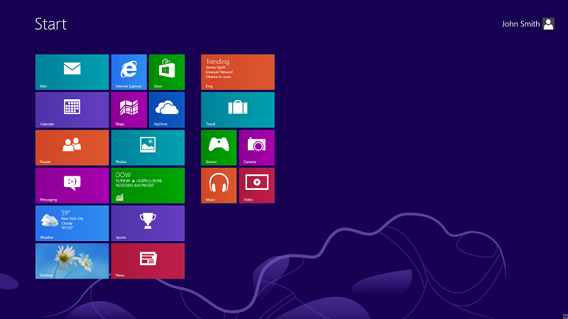
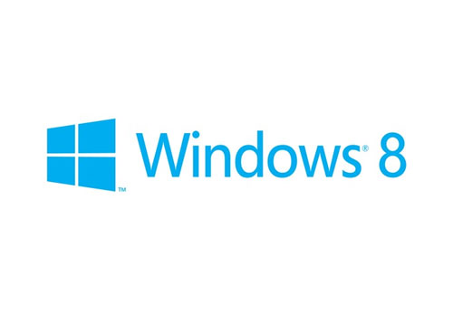

 
Perchè passare a Windows 8?
Motivo
Descrizione Motivo
1. Avvio Più Veloce
In Windows 8, gli sviluppatori hanno creato una modalità ibrida di arresto
che si traduce in tempi di avvio più veloci. Questa nuova modalità combina la
chiusura tradizionale che consente di avviare una nuova sessione per un nuovo
utente senza la necessità di distruggere completamente e inizializzare un sistema
da 0% a 100%.
2. Maggiore Sicurezza
Windows 8 migliora la sicurezza. Sulla base dei principi di Microsoft del WinRT
API, le interazioni delle applicazioni Metro con il sistema operativo Windows saranno
limitate. In definitiva, questo significa che i danni provocati da software dannosi
saranno il più possibile mitigati.
3. Aggiornamento e Ripristino
Uno dei più grandi fastidi di Windows è la difficoltà di reinstallazione e di riavvio
del sistema operativo. Con Windows 8, il tempo di restore si abbassa drasticamente.
La nuova funzionalità si chiama Refresh e agisce come un parziale reinstallazione.
In sostanza, un aggiornamento salverà l’immagine dei moduli del computer, reinstallerà
il kernel di Windows e reinserirà le altre componenti del sistema. Questo significa che
non si perdono applicazioni o dati utente. Se volete proprio un AVVIO completo, allora
si dovrà utilizzare la funzionalità Ripristino.
Costo per passare in Windows 8
Passa a Windows 8 Pro a un prezzo speciale di €29.99
Quanti Gigahertz ha il tuo PC?
Meno di 1 GHz
Più di 1 GHz
Quanta Memoria Ram ha il tuo PC?
Meno di 2 GB
Più di 2 GB
Quanto spazio hai sul disco rigido (hdd)?
Meno di 20 GB
Più di 20 GB